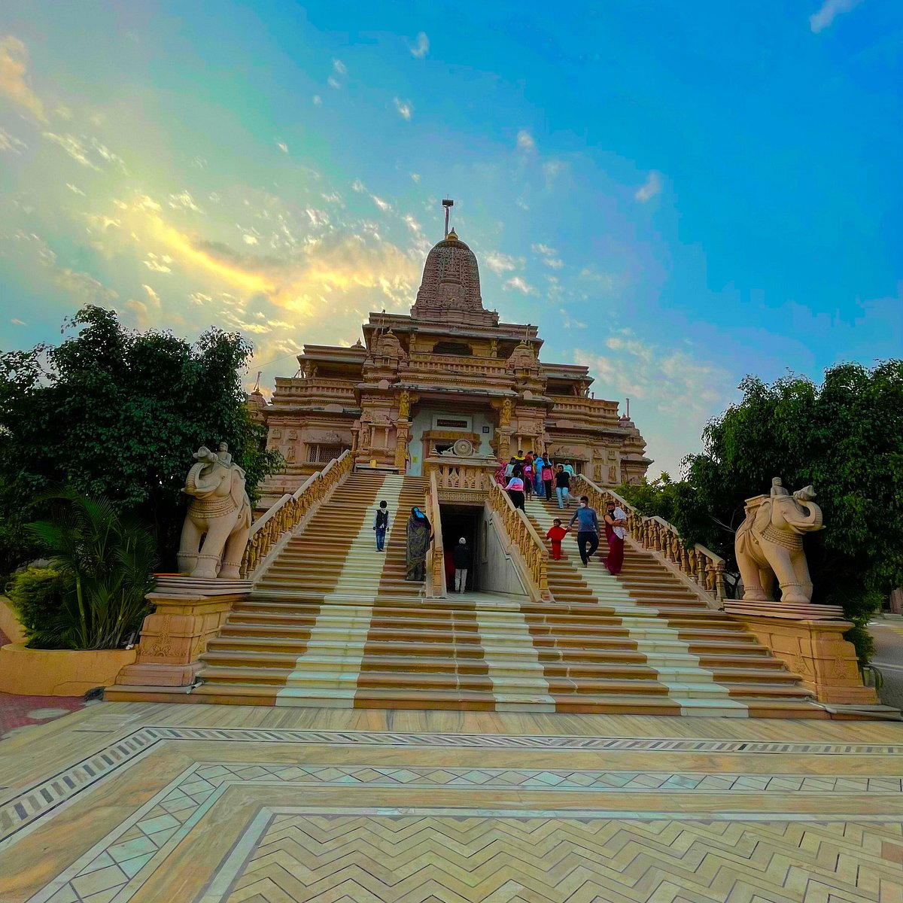

Kumbh Mela: The Grand Pilgrimage
Kumbh Mela is one of the largest religious gatherings in the world, held every 12 years in Nashik. It attracts millions of pilgrims who come to take a holy dip in the Godavari River.
Fun Fact:
~The Kumbh Mela is so massive that it can be seen from space!
Things to Explore at Kumbh Mela:
-
The Holy Dip:
Experience the spiritual significance of taking a dip in the sacred waters.
-
The Rituals:
Witness various rituals and ceremonies performed by devotees.
-
The Cultural Programs:
Enjoy cultural performances and spiritual discourses.
-
The Local Cuisine:
Savor delicious vegetarian food served at various stalls.
-
The Spiritual Atmosphere:
Immerse yourself in the serene and spiritual ambiance of the event.
Why Visit Kumbh Mela?
!Because it’s not just a festival, but a spiritual journey that connects you with millions of devotees from around the world!

Saptashrungi Temple: The Divine Abode
Saptashrungi Temple is a revered Hindu temple dedicated to Goddess Saptashrungi. It is situated on a hilltop and offers breathtaking views of the surrounding landscape.
Fun Fact:
~The temple is believed to be one of the 51 Shakti Peethas in India!
Things to Explore at Saptashrungi Temple:
-
The Scenic Trek:
Embark on a scenic trek to reach the temple, surrounded by lush greenery.
-
The Spiritual Atmosphere:
Experience the divine ambiance and tranquility of the temple.
-
The Local Cuisine:
Savor delicious local delicacies available at nearby eateries.
-
The Festivals:
Participate in various festivals celebrated with great fervor at the temple.
-
The Scenic Views:
Enjoy panoramic views of the Sahyadri mountain range from the temple premises.
Why Visit Saptashrungi Temple?
!Because it’s not just a temple, but a spiritual retreat that rejuvenates your soul amidst nature’s beauty!

Anjneri Hill: The Birthplace of Lord Hanuman
Anjneri Hill is a popular trekking destination and is believed to be the birthplace of Lord Hanuman. The hill offers stunning views and is surrounded by lush greenery.
Fun Fact:
~Anjneri Hill is named after Anjana, the mother of Lord Hanuman!
Things to Explore at Anjneri Hill:
-
The Trekking Trail:
Embark on a thrilling trek to the hilltop, surrounded by scenic beauty.
-
The Hanuman Temple:
Visit the ancient temple dedicated to Lord Hanuman located at the top.
-
The Scenic Views:
Enjoy panoramic views of the surrounding hills and valleys.
-
The Flora and Fauna:
Explore the diverse flora and fauna of the region.
-
The Local Cuisine:
Savor delicious local dishes available at nearby eateries.
Why Visit Anjneri Hill?
!Because it’s not just a trek, but a spiritual journey that connects you with nature and mythology!
Godavari River: The Sacred Lifeline
The Godavari River is one of the longest rivers in India and holds immense religious significance. It flows through Nashik and is a major pilgrimage site.
Fun Fact:
~The Godavari River is often referred to as the 'Ganges of the South'!
Things to Explore at Godavari River:
-
The Holy Dip:
Experience the spiritual significance of taking a dip in the sacred waters.
-
The Ghats:
Visit the various ghats along the river where rituals are performed.
-
The Scenic Beauty:
Enjoy the serene beauty of the river surrounded by lush greenery.
-
The Local Cuisine:
Savor delicious local delicacies available at nearby eateries.
-
The Festivals:
Participate in various festivals celebrated along the riverbanks.
Why Visit Godavari River?
!Because it’s not just a river, but a sacred lifeline that nourishes both body and soul!

Nasik Wine Tourism: A Taste of Luxury
Nasik is known as the 'Wine Capital of India' and offers a unique wine tourism experience. Visitors can explore vineyards, taste exquisite wines, and enjoy scenic views.
Fun Fact:
~Nasik produces over 30% of India's wine!
Things to Explore at Nasik Wine Tourism:
-
The Vineyard Tours:
Take guided tours of vineyards and learn about the winemaking process.
-
The Wine Tasting:
Savor a variety of wines produced in the region.
-
The Scenic Views:
Enjoy breathtaking views of vineyards and rolling hills.
-
The Local Cuisine:
Indulge in gourmet meals paired with exquisite wines.
-
The Cultural Experience:
Participate in wine festivals and cultural events held in the region.
Why Visit Nasik Wine Tourism?
!Because it’s not just about wine, but a luxurious experience that tantalizes your senses!
Nasik Caves: Ancient Marvels
The Nasik Caves are a group of ancient rock-cut caves that date back to the 1st century BC. They are known for their intricate carvings and historical significance.
Fun Fact:
~The caves are believed to have been used by Buddhist monks for meditation!
Things to Explore at Nasik Caves:
-
The Rock-Cut Architecture:
Marvel at the intricate carvings and sculptures adorning the caves.
-
The Historical Significance:
Learn about the history and significance of the caves in ancient times.
-
The Scenic Beauty:
Enjoy the serene surroundings and natural beauty of the area.
-
The Local Cuisine:
Savor delicious local dishes available at nearby eateries.
-
The Cultural Experience:
Participate in cultural events and festivals held in the region.
Why Visit Nasik Caves?
!Because it’s not just about history, but a journey through time that connects you with ancient civilizations!

Nasik Temples: Spiritual Sanctuaries
Nashik is home to numerous ancient temples that are architectural marvels and hold immense religious significance. These temples attract devotees from all over the country.
Fun Fact:
~Nashik is one of the four cities that host the Kumbh Mela, a major Hindu pilgrimage!
Things to Explore at Nasik Temples:
-
The Architectural Beauty:
Admire the intricate carvings and sculptures adorning the temples.
-
The Spiritual Atmosphere:
Experience the divine ambiance and tranquility of the temples.
-
The Festivals:
Participate in various festivals celebrated with great fervor at the temples.
-
The Local Cuisine:
Savor delicious local delicacies available at nearby eateries.
-
The Cultural Experience:
Engage in cultural events and rituals held at the temples.
Why Visit Nasik Temples?
!Because it’s not just about spirituality, but a journey through art, culture, and devotion!